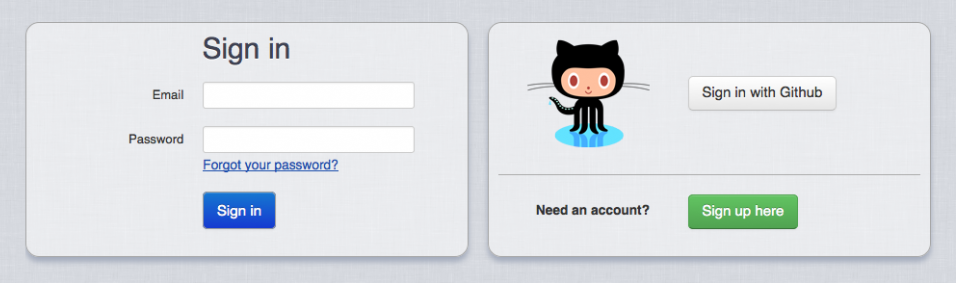
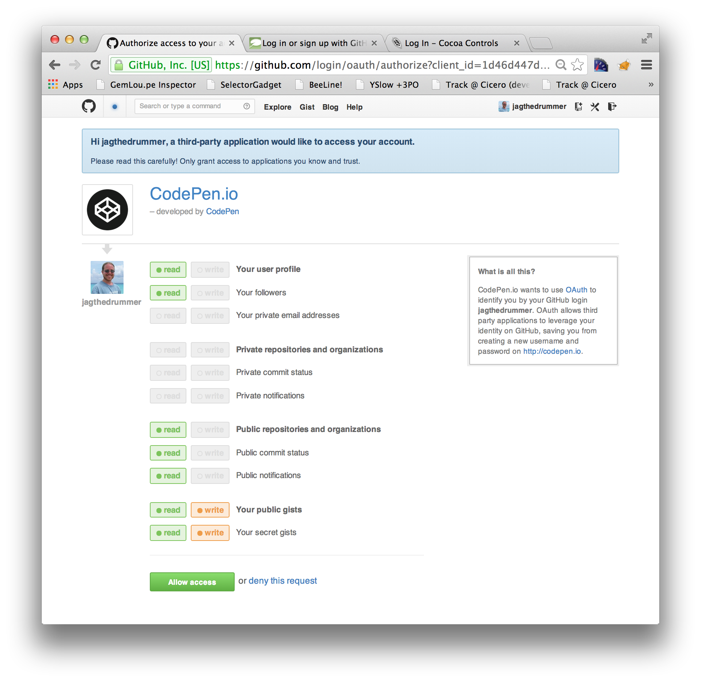

Service Oriented Architecture
for
Single Page Applications
OR
Stumbling Towards SOA
The Story of CloudHDR
CloudHDR
HDR Photo Processing Automation
In the Cloud*
* Obligatory Buzzword
What is HDR Photography?
HDR == High Dynamic Range
A better question : Why HDR?
You don't want this
Why HDR?
Eyes are fantastic optical instruments
Cameras aren't nearly as good
And they're also kinda dumb
My History with HDR Automation
- Version 0 : 2007 : Bash Scripts (PfsTools)
- Version 1 : 2010 : PictoDroid (PfsTools)
- Version 2 : 2011 : ThePhotoLabs / Phocoder (PfsTools)
- Version 3 : 2013 : CloudHDR (Photomatix)
Version 1
PictoDroid
- User Auth/Management
- File Management
- Processing Engine
- Job Monitoring UI
- Gallery Browsing UI
- Editing UI
- Set Splitter UI
- Uploading UI
- Cluster Management

Why Do Monoliths Form?
- Inertia
- Everything *seems* related
- It's the right way to start! (Yes, really.)
- Easier to on-board new devs
- Easier to maintain
- Easier to deploy
Easier or "Easier"?
Signs of Discomfort
- Bloated Gemfile
- Slow console start up
- Long test runs
- Long deploys
- Changes cascading into seeminly unrelated areas
- Fragile/high-churn code
- Application specific reasons
Version 2
Phocoder
|
ThePhotoLabs
|

Version 2 Benefits
Phocoder
|
ThePhotoLabs
|
CloudHDR
Everything in a separate project
Projects of CloudHDR
| cloudhdr_processing | Rails JSON API & Resque |
| cloudhdr_files | Rails JSON API & Resque |
| cloudhdr_director | Rails & Resque |
| cloudhdr_uploads | Rails |
| cloudhdr_users | Rails |
| cloudhdr_galleries | Rails & Ember App |
| cloudhdr_editor | Ember App |
| cloudhdr_splitter | Ember App |
| cloudhdr_processing_monitor | Ember App |

Types of Projects
- User Interfaces
- User Services
- Internal Services
Not sure about this direction...
Authentication for SOA


OAuth(2)
Protected Content in the Monolith
Protected Content in the Monolith
browser->website: GET /protected
website->browser: REDIRECT /sign_in
Note over browser: Follow REDIRECT
browser->website: GET /sign_in
website->browser: 200 OK
Protected Content with OAuth2
Protected Content with OAuth2
browser->website: GET /protected
website-->browser: 200 OK /sign_in
Note over browser: Click "Sign in w Github"
browser->Github: GET github.com/confirm
Github->browser: 200 OK
Protected Content with only OAuth2
No 'local' sign in page
Protected Content with only OAuth2
browser->website: GET /protected
website->browser: REDIRECT github.com/confirm
Note over browser: Follow REDIRECT
browser->Github: GET github.com/confirm
Github->browser: 200 OK
Custom OAuth2 Provider
cloudhdr_users
# Gemfile
gem "devise"
gem "bootstrap-rails"
Two Jobs
- UI for Sign In/Up/Out
- OAuth2 Provider for Other Services
Job 1 : UI for Sign In/Up/Out
Feature: Sign Up
Scenario: Sucessful sign up
Given a user without an account
Given he has a valid invitation code
When he creates a new account with email "jeremy@octolabs.com"
Then he should see "Sign Out"
Feature: Sign In/Out
Scenario: Sucessful sign in then sign out
Given an existing user with email "jeremy@octolabs.com"
When he signs in with email "jeremy@octolabs.com"
Then he should see "Sign Out"
When he signs out
Then he should see "Sign In"

Job 2 : Auth Endpoint for Other Services
Feature: External App Sign In
Scenario: Sucessful sign in
Given an existing user with email "jeremy@octolabs.com"
Given a registered external app
When he hits the external auth endpoint
Then he should see "Sign In"
When he signs in with email "jeremy@octolabs.com"
Then he should be redirected back to the external app
This looks familiar
browser->_uploads: GET /
_uploads--> _users: Some Redirects
Note over _users: User not logged in
_users->browser: Sign In Form
browser->_users: POST credentials
Note over _users: More Redirects
_users-->_uploads: He's cool
_uploads->browser: 200 OK /
Job 2 : Auth Endpoint for Other Services
Feature: External App Sign In
Scenario: Token refresh (user is already signed in)
Given an existing and signed in user with email "jeremy@octolabs.com"
Given a registered external app
When he hits the external auth endpoint
Then he should be redirected back to the external app
Already logged in
browser->_uploads: GET /
_uploads--> _users: Some Redirects
Note over _users: User is logged in
Note over _users: More Redirects
_users-->_uploads: He's cool
_uploads->browser: 200 OK /
That's it for cloudhdr_users
(down for more sequence diagrams)
Request protected page
browser->_uploads: GET /
Note right of _uploads: Internal Redirects
_uploads-->browser: 302 REDIRECT _users/auth...
Land at Sign In Page
browser->_uploads: GET /
_uploads-->browser: 302 REDIRECT ...
Note left of browser: Follow redir
browser->_users: GET /auth?return_url=...
Note right of _users: Internal Redirs
_users->browser: 200 OK - Sign In
Sign In and Return
browser->_uploads: GET /
_uploads-->browser: 302 REDIRECT ...
browser->_users: GET /auth?return_url=...
_users->browser: 200 OK - Sign In
Note left of browser: Enter credentials
browser->_users: POST
_users-->browser: REDIRECT return_url
Arrive at protected content
browser->_uploads: Previous steps omitted
browser->_users: POST
_users-->browser: 302 REDIRECT return_url
Note left of browser: Follow REDIRECT
browser->_uploads: GET /?auth=...
_uploads->_users: VERIFY
_users->_uploads: 200 OK
_uploads->browser: 200 OK
browser->_uploads: GET /
_uploads-->browser: 302 REDIRECT
Note left of browser: Follow REDIRECT
browser->_users: GET /auth?return_url=...
_users-->browser: 302 REDIRECT return_url
Note left of browser: Follow REDIRECT
browser->_uploads: GET /
_uploads->_users: VERIFY
_users->_uploads: 200 OK
_uploads->browser: 200 OK
Using the Auth Endpoint from Another Service
# Gemfile
gem "cloudhdr_auth" # OAuth2 Client
class ApplicationController < CloudhdrAuth::BaseController
protect_from_forgery
end
class SecretStuffController < ApplicationController
before_filter :login_required
end
Two 'types' of sessions
- cloudhdr_users : Signed In
- cloudhdr_* : Having a session
The _editor Ember app
running in the browser
talks directly to _files
Initial SPA Loading Sequence
- Browser loads page/JS from cloudhdr_editor
- JS function tries to pull profile json from cloudhdr_files
- If that fails, redirect to cloudhdr_files auth endpoint
- OAuth2 happens
- Browser is redirected to cloudhdr_editor
- JS function tries to pull profile json from cloudhdr_files
- If that works the Ember app loads
Initial SPA Loading Sequence
var profile_url = "<%= CLOUDHDR['files'] %>/api/v1/users/me?_=";
profile_url += (new Date()).getTime();
$.get( profile_url )
.done(function(data){
CloudhdrEditor.currentUser = data.user;
CloudhdrEditor.createEmberApp();
})
.fail(function() {
var newLocation = "<%= CLOUDHDR['files'] %>/external_auth?return=";
newLocation += encodeURIComponent(document.location.toString())
document.location = newLocation;
});
3 possible states
- Not signed in at all
- Signed in to _users but no session on _files
- Active session on _files
Active session on _files
browser->_editor: GET /
_editor->browser: 200 OK
Note over browser: JS executes
browser->_files: GET /profile
_files->browser: 200 OK
Note over browser: App continues to load
Signed in, no session on _files
participant browser
participant _editor
participant _files
participant _users
browser->_files: GET /profile
_files->browser: 401 Not Authorized
Note over browser: JS Redirect
browser->_files: GET /auth
_files-->_users: Some redirects
_users-->_files: He's cool
_files-->_editor: Try again
Not signed in
participant browser
participant _editor
participant _files
participant _users
browser->_files: GET /profile
_files->browser: 401 Not Authorized
Note over browser: JS Redirect
browser->_files: GET /auth
_files-->_users: Some redirects
_users->browser: 200 OK /sign_in
Another Option for Auth
- Present login form inside SPA
- Exchange credentials for token
- Send token with all requests
Cross domain issues
OR
Leaving localhost
CORS
Cross Origin Resource Sharing
Allows a site to tell browsers
that it is willing to
provide content/services to other sites
# Gemfile
gem "rack-cors", :require => "rack/cors"
# config/application.rb
config.middleware.use Rack::Cors do
allow do
origins(/http:\/\/localhost:\d*/,
/https:\/\/cloudhdr-\w*-octolabs\.fwd\.wf/,
/http:\/\/[\w-]*\.cloudhdr\.com/
)
resource '/api/v1/*',
:headers => :any,
:methods => [:get, :post, :put, :delete, :options]
end
end
Public/Open API
# config/application.rb
config.middleware.use Rack::Cors do
allow do
origins('*')
resource '/api/public/v1/*',
:headers => :any,
:methods => [:get]
end
end
Do NOT Do This!
# config/application.rb
config.middleware.use Rack::Cors do
allow do
origins('*')
resource '*',
:headers => :any,
:methods => [:get, :post, :put, :delete, :options]
end
end
Learn about Cross Site Scripting!
The AJAX Cookie Problem

By default jQuery does not send cookies with AJAX requests
withCredentials to the rescue!
// Make sure that cookies get sent with AJAX requests
$.ajaxPrefilter( function( options, originalOptions, jqXHR ) {
options.xhrFields = { withCredentials : true };
});
Consumer sends key in request
Maintenance Patterns
(API services are stable)(UI apps are volatile)
Thanks For Watching!
Jeremy Green
jeremy@octolabs.com